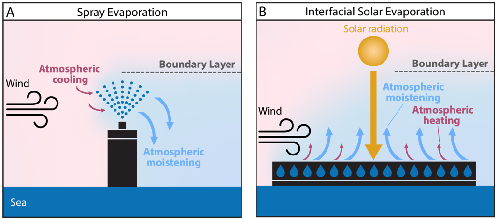

With freshwater scarcity a pressing issue, new ways of increasing freshwater availability are being researched. One such idea is using technologies to enhance the atmospheric moisture content by evaporating seawater. The goal is to stimulate precipitation downwind over coastal drylands (1). Two different types of technologies are considered (Figure 1):
To investigate the effect of enhanced moistening on the ABL, the Large Eddy Simulation (LES) code microHH is used (2). In LES the Naviety–Stokes equations are solved numerically on a grid where the smallest eddies are parametrized. In the current setup, the grid resolution in all directions (x, y, z) is 10 m. We consider a typical marine boundary layer near the Spanish Mediterranean coast, with a wind velocity u = 4 m/s. The sea surface is modelled as a flat surface with a low roughness length, a constant temperature and specific humidity at saturation.
There are two atmospheric cases: a mean atmosphere case “MEAN” and a dry-hot case “DRYHOT” where the specific humidity is decreased with 5 g/kg and the atmospheric temperature is increased with 3 K. Furthermore, per case there are three different model runs: 1) a reference run “REF”, 2) a run with a spray technology “SPR” implemented as a strong source of rain droplets at x = 1 km, z = 100 m, 3) a run with a solar technology “SOL”, implemented as a heated surface from x:0–1 km.

Figure 1: Two technology types considered to enhance atmospheric moisture. Adapted from (1).
1. Warnau, S. N. et al. *Technology-Enhanced Atmospheric Moistening (TEAM) for More Precipitation: A Perspective.* Environmental Science & Technology (2025). 2. van Heerwaarden, C. C. et al. *MicroHH 1.0: A Computational Fluid Dynamics Code for LES of ABL flows.* GMD (2017).
Look at the potential temperature and specific humidity fields of the reference runs of the two atmospheric cases.
a) How would you describe the ABL in each case? What mechanism explains the state of the ABL in each case?
Now take a look at the turbulent heat and moisture fluxes.
b) For the MEAN case: why is the humidity flux positive everywhere, while the heat flux changes sign?
c) For the DRYHOT case, describe the mixed layer.
Now examine how SPR and SOL technologies influence the ABL.
a) How do these technologies impact temperature and stability in MEAN and DRYHOT?
b) Determine and interpret stability regimes using the figure below.
Lastly, look at TKE changes.
c) SPR and SOL have opposite stability effects but both increase TKE. Why?